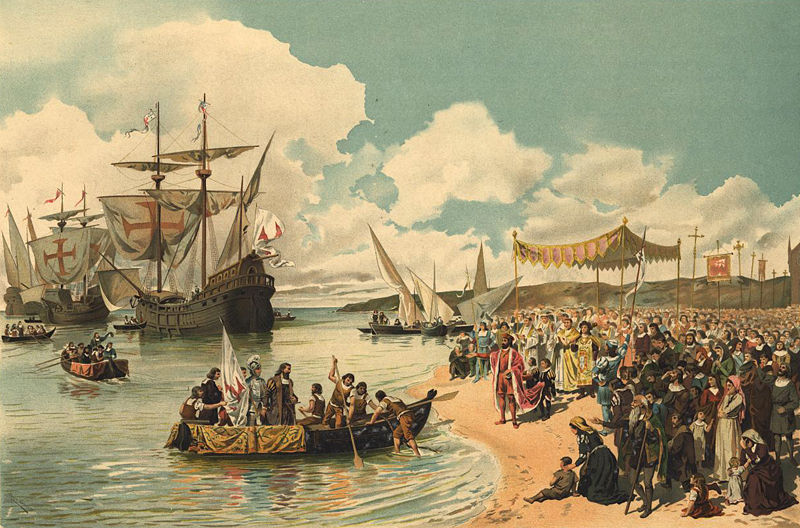

Late Medieval and Renaissance (1400 - 1460)
The term Renaissance used to denote the era from about 1430 to about 1600 means 'rebirth'.
This period coincides with the later phases of the broad historical development in Western culture, society, art and technology in which influential thinkers and writers openly repudiated the ‘Middle Ages’ (a term not then invented) and its tendency to venerate antiquity as a model.
The Renaissance was also a period of great discoveries since at that time Vasco da Gama, Cabral and Columbus started expeditions that led to the discovery of the Americas and parts of Asia and Africa.
During the Renaissance, composers started to develop a deep insterest for profane music and then, instrumental music became a trend.
British John Dowland were responsible for writing music for the lute and many other instruments.
Although instrumental profane music production started to arise in Europe, it was in the church where
Léonin (1135 - 1201)
The details of Léonin’s life are not known. To him is attributed the Magnus Liber Organi or “Great Book of Organum” in English, a collection of two-voiced organum settings, notably of Gradual, Alleluia, and Responsory chants, for the complete liturgical year.
It is known that he was the first music director of Notre-Dame from its creation until 1180, when Pérotin took over his position.
Pérotin (1160 - 1236)
The identity of Perotinus is largely a matter of speculation. Circumstantial evidence points to his being at Notre-Dame at the end of the 12th century and beginning of the 13th.
In addition to revising Léonin's Magnus Liber Organi, Pérotin is known to have composed two extensive four-part works, “Viderunt Omnes” and “Sederunt Omnes” who are comparable in scope to cathedrals of Gothic architecture, such as Notre-Dame.